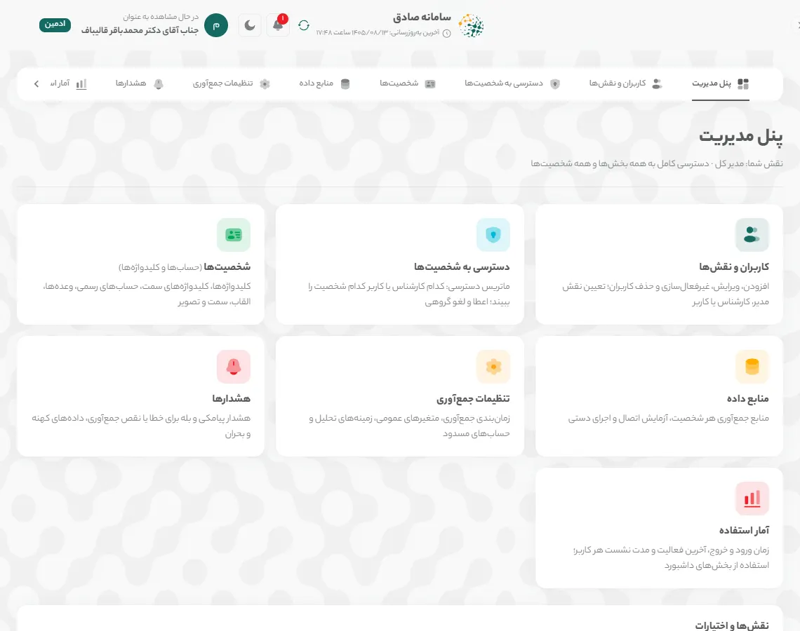
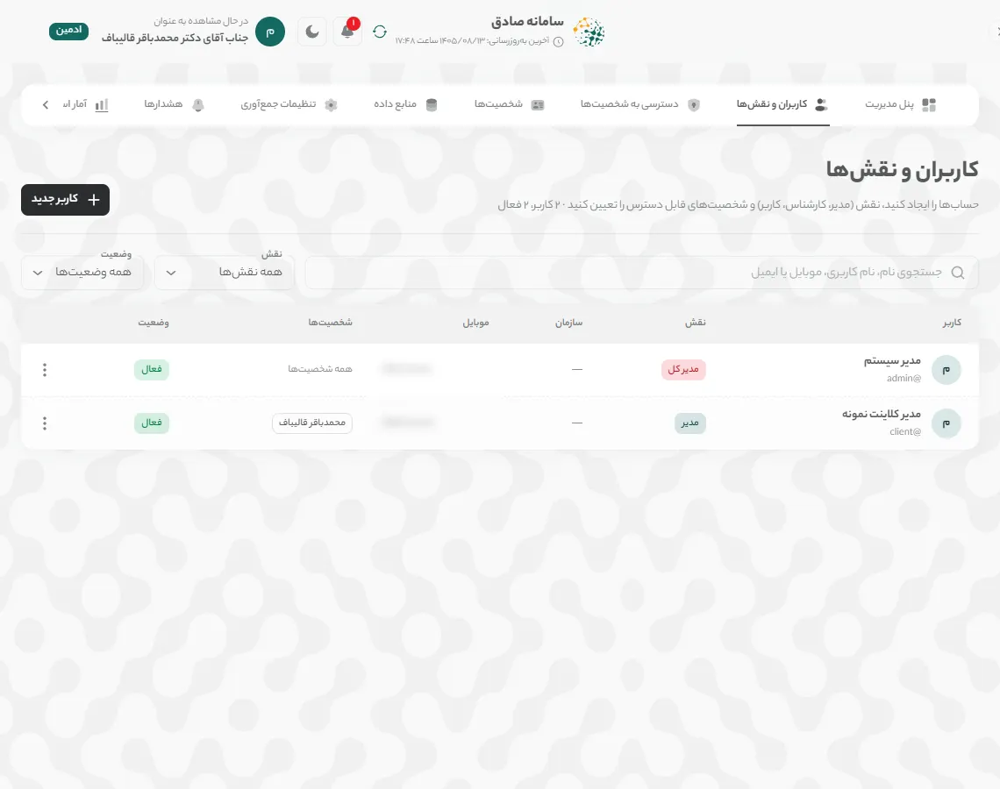
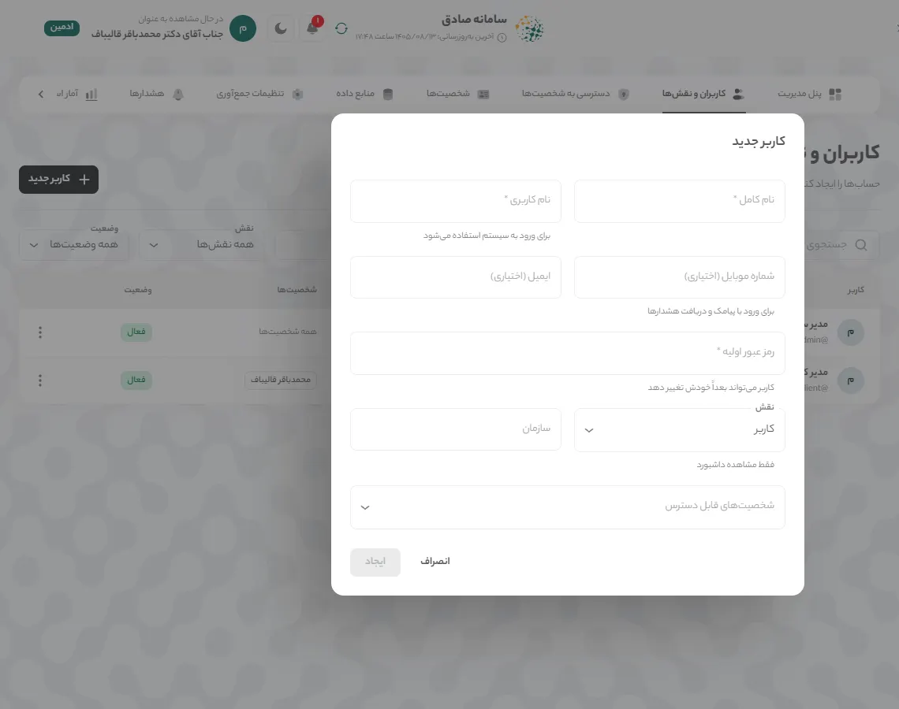
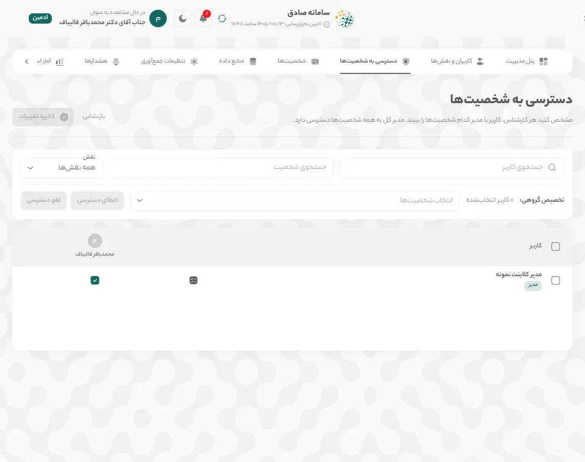
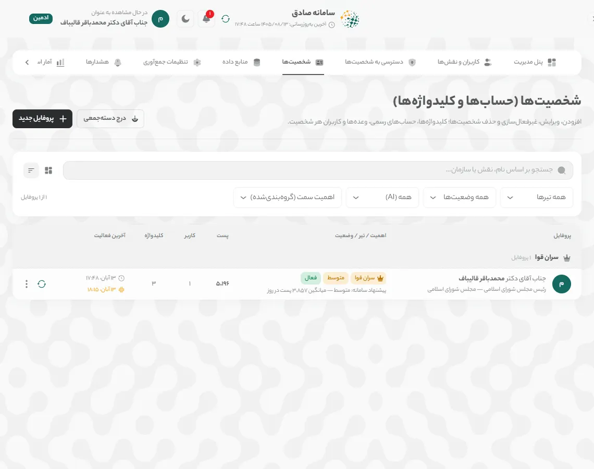
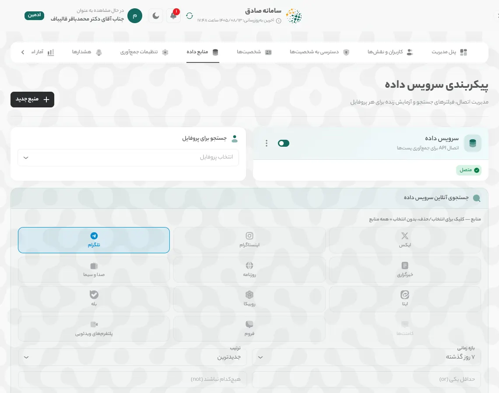
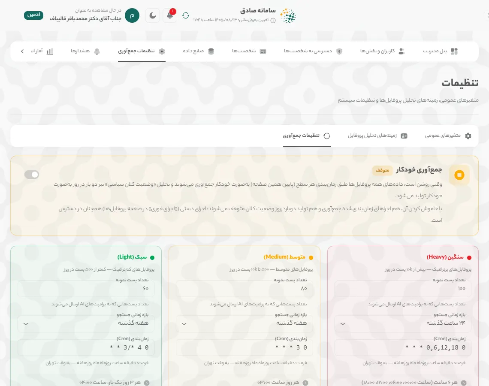
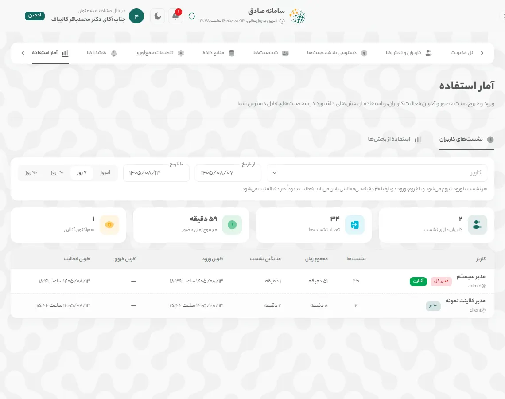
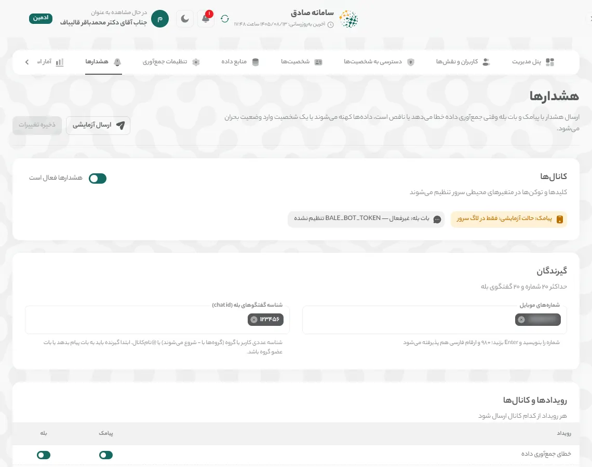

راهنمای مدیر
مدیر (مرکز پایش و فراداده) پنل مدیریت جامع را در اختیار دارد: کاربران و نقشها، دسترسی به شخصیتها، شخصیتها، منابع داده و جمعآوری، آمار استفاده و هشدارها. نقش «مدیر کل» همه این بخشها را دارد و نقش «مدیر» بخشهای مربوط به سازمان خود را.
چه کارهایی میتوانید بکنید
- ساخت، ویرایش، غیرفعالسازی و حذف کاربران و تعیین نقش آنها
- تعیین دسترسی هر کاربر به شخصیتها در ماتریس دسترسی
- ویرایش شخصیتها؛ افزودن و حذف شخصیت (مدیر کل)
- تنظیم منابع داده، زمانبندی جمعآوری و حسابهای مسدود (مدیر کل)
- دیدن آمار استفاده و نشستهای کاربران
- تنظیم هشدار پیامکی و بله (مدیر کل)
همه آنچه در «راهنمای کارشناس» آمده برای این نقش هم کاربرد دارد.
۱. پنل مدیریت
همه کارهای مدیریتی در «پنل مدیریت» است. هر نقش فقط بخشهایی را میبیند که اجازهاش را دارد.
نمای کلی
«پنل مدیریت» را از منوی کنار صفحه باز کنید. کارت هر بخش آن را باز میکند و نوار بالای پنل بین بخشها جابهجا میشود. جدول «نقشها و اختیارات» اختیارات چهار نقش را نشان میدهد.
نکته: «مدیر» کاربران و شخصیتهای سازمان خود را مدیریت میکند و فعالیت مدیر کل را نمیبیند. «منابع داده»، «تنظیمات جمعآوری»، «هشدارها» و افزودن یا حذف شخصیت فقط در اختیار «مدیر کل» است.

تصویر: «پنل مدیریت»: نمای کلی
۲. کاربران و نقشها
حساب بسازید، نقش (مدیر، کارشناس یا کاربر) و شخصیتهای قابل دسترس را تعیین کنید.
فهرست کاربران
در «کاربران و نقشها» با «جستجوی نام، نام کاربری، موبایل یا ایمیل» و فیلترهای «نقش» و «وضعیت» کاربران را پیدا کنید. منوی ⋮ هر ردیف «ویرایش»، «تغییر رمز عبور»، «غیرفعالسازی» / «فعالسازی» و «حذف کاربر» را دارد.

تصویر: صفحه «کاربران و نقشها» کاربر جدید
«کاربر جدید» را بزنید و «نام کامل»، «نام کاربری»، «رمز عبور اولیه» و «نقش» را وارد کنید. «شماره موبایل (اختیاری)» برای ورود با پیامک و دریافت هشدارها لازم است. در «شخصیتهای قابل دسترس» شخصیتهایی را که این کاربر میبیند انتخاب کنید و «ایجاد» را بزنید.

تصویر: پنجره «کاربر جدید» غیرفعالسازی یا حذف
برای بستن موقت ورود، «غیرفعالسازی» را بزنید؛ هر زمان بخواهید دوباره فعالش کنید. «حذف کاربر» حساب و دسترسیهایش را برای همیشه پاک میکند و بازگشتپذیر نیست.
۳. ماتریس دسترسی به شخصیتها
مشخص کنید هر کارشناس، کاربر یا مدیر کدام شخصیتها را ببیند. مدیر کل به همه شخصیتها دسترسی دارد.
تغییر تکی
در «دسترسی به شخصیتها» هر ردیف یک کاربر و هر ستون یک شخصیت است. با زدن هر خانه دسترسی را بدهید یا بردارید؛ خانههای تغییرکرده رنگی میشوند. با «جستجوی کاربر»، «جستجوی شخصیت» و «نقش» جدول را کوچک کنید.

تصویر: صفحه «دسترسی به شخصیتها» تخصیص گروهی
کاربران را با چکباکس کنار نامشان انتخاب کنید، در «تخصیص گروهی:» از «انتخاب شخصیتها» شخصیتها را برگزینید و «اعطای دسترسی» یا «لغو دسترسی» را بزنید.
ثبت تغییرات
تا «ذخیره تغییرات» را نزنید و در پنجره تأیید «ثبت» را انتخاب نکنید، چیزی ذخیره نمیشود. «بازنشانی» همه تغییرات ذخیرهنشده را برمیگرداند.
نکته: سامانه اجازه نمیدهد آخرین شخصیت یک کاربر را از او بگیرید؛ برای بستن ورود، کاربر را غیرفعال کنید.
۴. شخصیتها
شخصیتهای تحت رصد را با کلیدواژهها، حسابهای رسمی، وعدهها و کاربرانشان مدیریت کنید.
فهرست شخصیتها
مدیر کل در «شخصیتها (حسابها و کلیدواژهها)» همه شخصیتها را با سطح، وضعیت، تعداد پست و آخرین فعالیت میبیند و میتواند بین نمای «کارت» و «جدول» جابهجا شود. منوی ⋮ هر شخصیت «ویرایش»، «اجرای فوری»، «دانلود دادهها»، «آمار استفاده»، «غیرفعالسازی» و «حذف دائمی» را دارد.

تصویر: صفحه «شخصیتها» از دید مدیر کل شخصیت جدید
با «پروفایل جدید» شخصیت تازه بسازید یا با «درج دستهجمعی» چند شخصیت را از فایل اضافه کنید. در پنجره ویرایش، علاوه بر بخشهایی که کارشناس میبیند، «اهمیت سمت (ترتیب در فهرستها)»، «سطح پروفایل (Tier)»، «وزن منابع داده»، «کاربران دارای دسترسی» و «مدیریت نمایش بخشها» در دسترس مدیر کل است.
مدیر سازمان
«مدیر» در همین صفحه فقط شخصیتهای خود را میبیند و مانند کارشناس با «ویرایش اطلاعات» آنها را ویرایش میکند (راهنمای کارشناس را ببینید).
۵. منابع داده و تنظیمات جمعآوری
فقط مدیر کل: منبع جمعآوری هر شخصیت، زمانبندی جمعآوری و حسابهای مسدود را تنظیم کنید.
منابع داده
در «منابع داده» (صفحه «پیکربندی سرویس داده») منبع هر شخصیت را با «منبع جدید» تعریف کنید و با کلید کنار هر منبع آن را فعال یا غیرفعال کنید. در «جستجوی آنلاین سرویس داده» یک پروفایل و سکو را انتخاب کنید تا اتصال و نتیجه جستجو را زنده آزمایش کنید.

تصویر: صفحه «پیکربندی سرویس داده» تنظیمات جمعآوری
در «تنظیمات جمعآوری» با کلید «جمعآوری خودکار» زمانبندی را روشن یا متوقف کنید. برای هر سطح («سنگین»، «متوسط»، «سبک») «تعداد پست نمونه»، «بازه زمانی جستجو» و زمانبندی را تنظیم و «ذخیره تنظیمات» را بزنید. همه زمانها به وقت تهران است و تغییرات بدون راهاندازی دوباره اعمال میشود.

تصویر: برگه «تنظیمات جمعآوری» حسابهای مسدود
در کارت «حسابهای مسدود» (پایین همان صفحه) نام کاربری حسابهای تبلیغاتی یا بیربط را اضافه کنید و «ذخیره فهرست» را بزنید؛ پستهای آنها در تحلیلها حساب نمیشود.
جمعآوری دستی
مدیر و مدیر کل با دکمه «جمعآوری دادهها» در نوار بالای صفحه میتوانند جمعآوری شخصیت انتخابشده را فوراً اجرا کنند و پیشرفت آن را ببینند. پنجره را میتوان بست؛ جمعآوری در پسزمینه ادامه دارد.
۶. آمار استفاده
ورود و خروج، مدت حضور و آخرین فعالیت هر کاربر، و استفاده از بخشهای داشبورد.
نشستهای کاربران
در «آمار استفاده» برگه «نشستهای کاربران» برای هر کاربر زمان «ورود»، «آخرین فعالیت»، «مدت» و «پایان» را نشان میدهد. هر نشست با «خروج»، «ورود دوباره» یا ۳۰ دقیقه بیفعالیتی پایان مییابد؛ نشست باز با «در جریان» و کاربر حاضر با «آنلاین» مشخص است. بازه را با «امروز»، «۷ روز»، «۳۰ روز»، «۹۰ روز» یا تاریخ دلخواه و کاربر را با فیلتر انتخاب کنید.

تصویر: صفحه «آمار استفاده» استفاده از بخشها
برگه «استفاده از بخشها» «رتبهبندی پروفایلها» و «پرکاربردترین بخشها» را بر اساس تعداد بازدید نشان میدهد. برای دیدن جزئیات هر کاربر روی پروفایل بزنید.
نکته: مدیر فقط کاربران شخصیتهای خود را میبیند؛ نشستهای مدیر کل به او نمایش داده نمیشود.
۷. هشدارها
فقط مدیر کل: وقتی جمعآوری خطا میدهد یا ناقص است، دادهها کهنه میشوند یا شخصیتی وارد بحران میشود، پیامک یا پیام بله ارسال شود.
کانالها و گیرندگان
در «هشدارها» کلید «هشدارها فعال است» را روشن کنید. در «گیرندگان» «شمارههای موبایل» و شناسه گفتگوهای بله را بنویسید و Enter بزنید (حداکثر ۲۰ شماره و ۲۰ گفتگوی بله).

تصویر: صفحه «هشدارها» رویدادها و آستانهها
در «رویدادها و کانالها» برای هر رویداد («خطای جمعآوری داده»، «جمعآوری ناقص (بیشتر منابع خالی)»، «دادهها بهروز نیست»، «ورود پروفایل به وضعیت بحران») پیامک و بله را جدا روشن کنید. در «آستانهها» کهنگی داده، «حداقل سطح بحران» و حد جمعآوری ناقص را تعیین کنید.
ذخیره و آزمایش
«ذخیره تغییرات» را بزنید، سپس با «ارسال آزمایشی» یک پیام آزمایشی به گیرندههای ذخیرهشده بفرستید. جدول «آخرین هشدارها» زمان، شخصیت و وضعیت ارسال هر هشدار را نشان میدهد.
واژهنامه کارتها
هر کارت داشبورد در یک جمله. توضیح کامل، نحوه محاسبه و منبع داده هر کارت در نماد (i) کنار عنوان آن است.
صفحه «داشبورد»
- شاخص سلامت اعتبار
- تراز کلی احساسات کاربران نسبت به این شخصیت، روی مقیاس ۰ تا ۱۰۰.
- خلاصه هوش مصنوعی
- خلاصه متنی وضعیت فضای مجازی درباره این شخصیت در سه بند کوتاه: وضعیت کلی احساسات، موضوعات و پلتفرمهای غالب، و مهمترین هشدار یا فرصت.
- رادار بحران
- پنج نشانه زودهنگام بحران رسانهای: احساسات منفی، سرعت انتشار، بازتاب صفحات رسمی، تأثیرگذاری و تعاملات.
- روند احساسات
- تعداد پستهای مثبت، خنثی و منفی در هر روز؛ در نمای ۲۴ ساعت، در هر ساعت.
- طیف سیاسی
- پستهای هر جناح سیاسی درباره این شخصیت و اینکه چه سهمی از آنها مثبت، خنثی یا منفی است.
- هشتگها و موضوعات داغ
- موضوعات و هشتگهایی که بیشترین تکرار را در پستهای مرتبط داشتهاند.
- پربازدیدترین محتواها
- پستهایی درباره این شخصیت که بیشترین بازدید را داشتهاند.
- منابع داده
- تعداد پستهای مرتبط با این شخصیت در هر پلتفرم.
صفحه «تحلیل»
- وضعیت کلان کشور
- مهمترین رویدادهای امروز و دیروز کشور در چهار حوزه: فرهنگی و اجتماعی، سیاسی و دیپلماتیک، امنیتی و نظامی، اقتصادی و معیشتی؛ بههمراه رویدادهای مرتبط با خود شخصیت.
- چشمانداز عمومی
- چشمانداز عمومی: سهم هر حالت احساسی (امید، نگرانی، اطمینان و …) در پستهای مرتبط.
- ابر واژگان
- کلیدواژههای پرتکرار در گفتگوها درباره این شخصیت؛ هرچه واژه بزرگتر، پرتکرارتر.
- حسابهای ربات و انسانی
- چه سهمی از حسابهایی که درباره این شخصیت نوشتهاند احتمالاً ربات یا مشکوکاند، و مشکوکترین حسابها کداماند.
- تحلیل شکاف روایت
- چه سهمی از بحث مردم به روایتهایی میپردازد که شخصیت در صفحات رسمیاش مطرح میکند، و مردم خارج از این روایتها درباره چه موضوعاتی مینویسند.
صفحه «رسانه»
- صفحات رسمی
- کانالها و صفحات رسمی این شخصیت که در سامانه پایش میشوند.
- رصد وعدهها
- وعدههای ثبتشده این شخصیت، سمت و دوره مسئولیتی که وعده در آن داده شده، و واکنش مردم به هر کدام.
- تحلیل محتوای منتشرشده
- حجم، بازدید، لایک و بازنشر محتوای منتشرشده در صفحات رسمی، هفته به هفته.
- تایملاین یکپارچه
- آخرین پستهای منتشرشده در صفحات رسمی، به ترتیب زمان.
صفحه «پستها»
- خلاصه پلتفرمها
- تعداد کل پستهایی که در هر پلتفرم درباره این شخصیت منتشر شده است.
- نقشه تأثیرگذاران
- حسابهایی که بیشترین بازدید را در گفتگو درباره این شخصیت داشتهاند و موضعشان.
- پربازدیدترین پستها
- پستهایی با بیشترین تعداد بازدید.
- پربحثترین پستها
- پستهایی که بیشترین بحث و نظر را برانگیختهاند.
- پرتکرارترین پستها
- پستهایی که بیشتر از بقیه بازنشر یا فوروارد شدهاند.
صفحه «پیشنهادها»
- پیشنهادهای امروز
- پیشنهادهای عملیاتی برای واکنش رسانهای.
- شبیهساز سناریو
- شبیهساز سناریو: یک اتفاق فرضی بنویسید تا واکنش احتمالی فضای مجازی پیشبینی شود.
پرسشهای پرتکرار
فرق «مدیر» و «مدیر کل» چیست؟
«مدیر کل» به همه بخشها و همه شخصیتها دسترسی دارد. «مدیر» فقط کاربران، دسترسیها و آمار استفاده شخصیتهای سازمان خود را مدیریت میکند و منابع داده، تنظیمات جمعآوری و هشدارها را نمیبیند.
کاربری که دیگر نباید وارد شود را حذف کنم یا غیرفعال؟
غیرفعال کنید. سوابق نشستها و دسترسیها میماند و هر زمان بخواهید دوباره فعال میشود. حذف بازگشتپذیر نیست.
چرا هشدار پیامکی ارسال نمیشود؟
بررسی کنید «هشدارها فعال است» روشن باشد، گیرندهها ذخیره شده باشند و برای آن رویداد کانال پیامک روشن باشد. وضعیت سرویس پیامک و بات بله زیر «کانالها» نمایش داده میشود؛ تنظیم کلیدهای آنها با تیم فنی است.
چطور ببینم چه کسی چه زمانی وارد شده است؟
در «آمار استفاده» برگه «نشستهای کاربران» را باز کنید و کاربر و بازه را انتخاب کنید.
چرا نمیتوانم نام یا سازمان شخصیت را تغییر دهم؟
نام، سازمان، سطح و اولویت شخصیت و افزودن یا حذف شخصیت فقط در اختیار مدیر کل است. اگر تغییری لازم است، به مدیر کل اطلاع دهید.